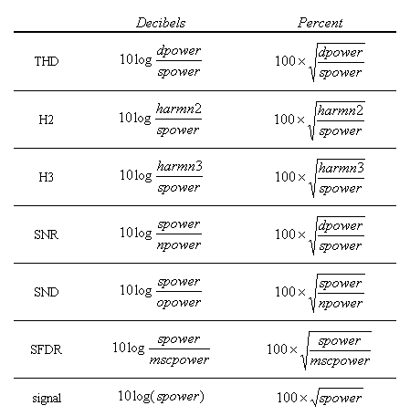
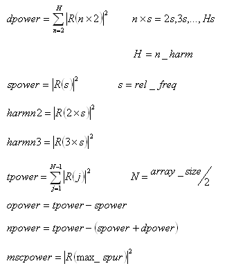

DSP_THD
For the specified signal frequency (determined by rel_freq) in
src, this API computes the total harmonic distortion (THD), power of the second
harmonic (H2), power of the third harmonic (H3), signal to noise plus distortion (SND),
signal-to-noise ratio (SNR), spurious free dynamic range (SFDR), and signal power in decibels or
percent.
First, this function transforms the src values to COMPLEX values
c(j) as
follows:
DSP_FFT(src, c, size, RECT);
Then, for 1≤
j ≤ size/2 - 1, COMPLEX values rtemp(j) are calculated by adjusting COMPLEX
values c(j).
R(j) is calculated by filtering (filter)
as follows:

Finally, the values are calculated as follows:

where

The results are returned to result declared by the
DYNPARtype data type as follows:
Member |
Type |
Returned Value |
|---|---|---|
result.thd |
DOUBLE |
THD in percent or decibels |
result.h2 |
DOUBLE |
H2 in percent or decibels |
result.h3 |
DOUBLE |
H3 in percent or decibels |
result.snr |
DOUBLE |
SNR in percent or decibels |
result.snd |
DOUBLE |
SND in percent or decibels |
result.sfdr |
DOUBLE |
SFDR in percent or decibels |
result.signal |
DOUBLE |
Signal level in volts or decibels |
This API is defined in the header file /opt/hp93000/soc/prod_com/include/MAPI/libdsp.h.
Syntax
DSP_THD(ARRAY_I& src, DYNPARtype *result, INT rel_freq, INT n_harm_thd, INT n_harm_sfdr, INT output_mode, ARRAY_D& filter); DSP_THD(INT *src, DYNPARtype *result, INT size, INT rel_freq, INT n_harm_thd, INT n_harm_sfdr, INT output_mode, DOUBLE *filter); DSP_THD(ARRAY_D& src, DYNPARtype *result, INT rel_freq, INT n_harm_thd, INT n_harm_sfdr, INT output_mode, ARRAY_D& filter); DSP_THD(DOUBLE *src, DYNPARtype *result, INT size, INT rel_freq, INT n_harm_thd, INT n_harm_sfdr, INT output_mode, DOUBLE *filter);
I/O |
Parameter |
Description / Range |
|---|---|---|
I |
src |
Source array
|
O |
result |
Computed results
|
I |
size |
Number of elements to be processed. 8 ≤size≤ 2097152 size≤ size of src array size can be any integer in the above range. In the case that size is not power of two, the Xpress data mode must be enabled in order to process the elements.
|
I |
rel_freq |
Number of measured signal periods, which is used to calculate the relative frequency 1 ≤rel_freq ≤ (size/2) - 1
|
I |
n_harm_thd |
Number of harmonics to be included for THD calculation. 3 ≤n_harm_thd ≤ (size/2) - 1
|
I |
n_harm_sfdr |
Number of harmonics to be excluded from SFDR calculation. n_harm_sfdr = 0 or 2 ≤n_harm_sfdr≤ (size / 2) - 1 Example: n_harm_sfdr = 0 means all harmonics are included. n_harm_sfdr = 3 means the 2nd and 3rd harmonics are excluded.
|
I |
output_mode |
Output mode PERCENT: Percent DB: Decibels
|
I |
filter |
An array containing the filter transfer function Each element corresponds to a result array element size/2 (size of filter) NULL (0): filtering is not performed. |
Important Points
- If
n_harm × rel_freqis greater than the highest frequency component (Nyquist frequency), the extra frequency components are folded back into the area less than the highest frequency component and taken into account when computing THD. - The frequency
Fr, which is the fundamental frequency for THD calculation, is defined as follows:
Fsis the sampling frequency.
Example
This example performs a DAC distortion test. DSP_THD is used to compute the total harmonic distortion of the result waveform. The values of SNR and THD are judged and logged. (It is assumed that the required parameters are already provided in the testflow editor. For example, initial values of the parameters num_cycle_DAC ,and num_harmonics_DAC):
int debug;
int n,j;
int num_cycle_DAC, num_harmonics_DAC;
bool validSamples = false;
ARRAY_I adc_wave;
ARRAY_D dac_wave,dac_spec;
DYNPARtype dac_thd;
int GlobalOverOn;
int off_line;
int nsites; // Max. number of configured Sites
ARRAY_I esites, csites; // Enabled Sites array
ON_FIRST_INVOCATION_BEGIN();
GET_TESTFLOW_FLAG("debug_analog", &debug);
GET_TESTFLOW_FLAG("global_overon", &GlobalOverOn);
GET_SYSTEM_FLAG("offline", &off_line);
GET_ENABLED_SITES(esites);
GET_CONFIGURED_SITES(csites);
nsites = csites.size();
//
// Connect and activate analog module trigger line
//
Routing.pin(DGT_pin).connect(TM::SINGLE);
DGT(DGT_pin).enable();
//
// Perform the test
//
DIGITAL_CAPTURE_TEST( 1.0 ) ;
//
// Deactivate analog module trigger line and disconnect
//
DGT( DGT_pin ).disable();
Routing.pin(DGT_pin).disconnect();
ON_FIRST_INVOCATION_END();
//
// Retrieve measurement data
//
dac_wave = DGT ( DGT_pin ).getWaveform();
//
// Perform computation
//
for (n=0;!validSamples && n < dac_wave.size();n++)
{
//
// Find constant wave
//
if (dac_wave[0] != dac_wave[n])
{
validSamples = true;
}
}
//
// Check whether it is a valid waveform
//
if (validSamples && dac_wave.size() > 0)
{
//
// Calculate THD & SND
//
DSP_THD(dac_wave,&dac_thd,num_cycle_DAC,num_harmonics_DAC,2,DB,0);
}
else
{
dac_thd.thd = -999.99;
dac_thd.snr = -999.99;
}
if (debug)
{
cout << "Set_Init_Flags : Debug ON " << endl;
if (off_line)
{
cout << "Set_Init_Flags : OFF-line " << off_line << endl;
}
cout << "Util_Class::Set_Init_Flags : Nsites : " << nsites << " Enabled_sites : ";
for (j = 0; j < esites.size(); j++)
{
cout << esites[j] << " ";
}
cout << endl;
PUT_DEBUG(DGT_pin,"Dist_dac_wave",dac_wave);
if(validSamples)
{
DSP_SPECTRUM(dac_wave,dac_spec,DB,0.0,RECT,0);
PUT_DEBUG ( DGT_pin , "Dist_dac_spec" , dac_spec );
}
cout << endl;
}
//
// Compare computed result with limits and set pass/fail
//
TEST( DGT_pin, "DAC_SNR", dac_thd.snr);
TEST( DGT_pin, "DAC_THD", dac_thd.thd);
Functional changes
- Introduced before SmarTest 6.3.2
- SmarTest 6.5.2: The spurious free dynamic range (SFDR) can be calculated.
- SmarTest 6.5.2: The size parameter is not restricted to the power of two.
- SmarTest 6.5.2: The DYNPARtype result is introduced.